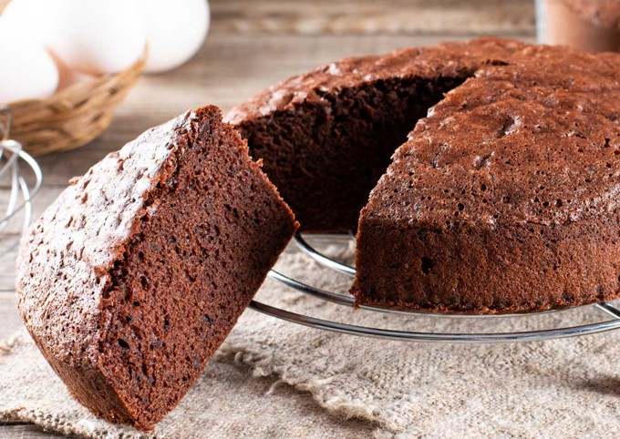

RECETA DE PASTEL DE CHOCOLATE
Compartida por Ivanna Flores
timer
person
Ingredientes
- 2 tz de azúcar
- 1 ¾ tz de harina
- ¾ tz de cocoa
- 1 ½ cditas de polvo para hornear
- 1 ½ cditas de bicarbonato de sodio
- 1 cdita de sal
- 2 huevos
- 1 tz de leche
- ½ tz de aceite vegetal
- 2 cditas de vainilla
- 1 tz de agua hirviendo
Procedimiento
- Precalienta el horno a 180°C.
- Engrasa y enharina el molde.
- En un tazón grande, mezcla el azúcar, harina, cocoa, polvo para hornear, bicarbonato de sodio y sal.
- Forma un pozo en el centro y agrega los huevos, leche, aceite y vainilla.
- Bate durante 2 minutos con batidora eléctrica a velocidad media.
- Incorpora la taza de agua hirviendo.
- Vierte dentro del molde y hornea de 30 a 40 minutos.
- Deja enfriar y desmolda.
